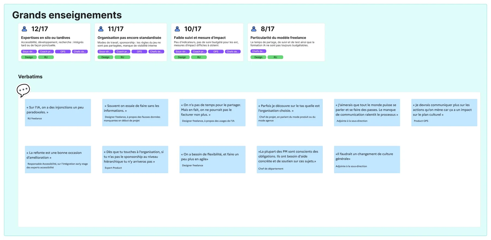
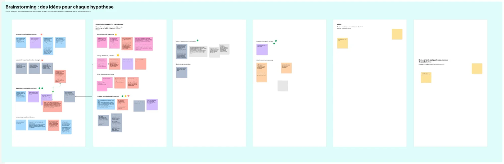
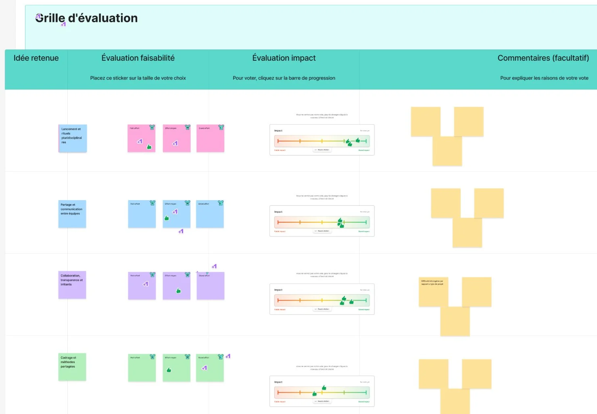

Framing
- ProblemIn the ministries' design studio, expertise such as accessibility or research arrives late, ways of working are not shared, and impact is rarely measured.
- What I didInterviewed 17 people across management, product, ops, design and research, synthesised 5 key findings, then designed and facilitated a co-creation workshop to turn them into recommendations.
- ImpactPrioritised, actionable recommendations placed on an effort / impact matrix, ready to feed the studio's 2027 programme.
Context
Context and question
The DNUM runs the digital services of the French Ministries of Social Affairs. Its design studio works with product teams on redesigns and new public services, with in-house staff and freelancers: designers, user researchers, accessibility experts, product coaches and ops.
The studio wanted to understand what slows down its design process and its collaboration with product teams, so it could build its 2027 programme on evidence rather than intuition.
What concrete actions would improve the studio's design process and its collaboration with product teams, and which ones should come first in 2027?
Method
Approach and methodology
- 17people interviewed
- 5key findings
- 1 h 30co-creation workshop
- 8–12workshop participants
- Investigation: interviews with 17 people from management, product coaching, ops, project and department heads, design and user research.
- Thematic synthesis: 5 key findings, each counted across interviews and illustrated with verbatims.
- Co-creation workshop: share the findings with product experts and key people of the studio, then generate, validate and prioritise ideas together.
Workshop plan
![Workshop plan. Goal: present the main findings of the investigation, then brainstorm, validate and prioritise proposals. Duration 1 hour 30 with a 5-minute break, hybrid, preferably on site, 8 to 12 participants. Objectives: identify concrete actions to improve design processes and collaboration with product teams, and build an effort and impact matrix of design organisation projects for 2027. Agenda: introduction 10 minutes, findings 10, brainstorming 30, validation of ideas 15, break 5, prioritisation by effort and impact 25, closing with the matrix 10.](../assets/dnum-workshop-plan.webp)
| Time | Step | How |
|---|---|---|
| 10 min | Introduction | Goal, expected outcome, agenda and ground rules. |
| 10 min | Findings | The 5 key findings and their verbatims, then clarification questions. |
| 30 min | Brainstorming | One lane per finding. 15 minutes in silence, one idea per sticky note, then quick sharing and grouping of duplicates. |
| 15 min | Validation | Everyone votes for the ideas they find actionable and relevant. Ideas with 5 votes or more are kept. |
| 25 min | Prioritisation | Effort voted with T-shirt sizes (S, M, L), impact voted on a progress bar, with optional comments. |
| 10 min | Closing | Kept ideas placed on the effort / impact matrix. |
Data
Five key findings from the investigation
Insight 1: Expertise in silos or brought in too late
Accessibility, development and research are integrated late or only occasionally.
- Evidence
- 12 of 17 people
- Decision
- Bring every expertise in at project kick-off
- Result
- Theme: kick-off and multidisciplinary rituals
Insight 2: An organisation not yet standardised
Ways of working and sponsorship: the rules of the game are not shared, and there is little internal visibility.
- Evidence
- 11 of 17 people
- Decision
- Shared frameworks and methods by project type
- Result
- Theme: shared framing and methods
Insight 3: Little tracking or measurement of impact
Few indicators, no budgeted follow-up for freelancers, impact measures hard to obtain.
- Evidence
- 10 of 17 people
- Decision
- Define success indicators from the start
- Result
- Theme: measuring success from design
Insight 4: The specific constraints of the freelance model
Time for sharing, follow-up and testing, and AI training, cannot always be billed.
- Evidence
- 8 of 17 people
- Decision
- Fund and adapt sharing time
- Result
- Theme: funding sharing time
Insight 5: Research: heavy logistics, little capitalisation
Each user researcher capitalises with their own tools.
- Evidence
- 4 of 17 people
- Decision
- Pool research tools and knowledge
- Result
- Ideas to pool research tools


What people said
Often we try to do without the information.
Freelance designer, about missing data at the start of a projectSometimes I find out on the spot which organisation was chosen.
Project manager, about product or agency modeAs soon as you touch the organisation, without sponsorship from management you won't get there.
Product expertMost PMs know their obligations. They need concrete help and support on these topics.
Head of department
Workshop
From findings to ideas
In the brainstorming area, each finding had its own lane. Participants wrote in silence, one idea per sticky note, then grouped duplicates into themes. They then voted for the ideas they found actionable; themes with 5 votes or more went on to prioritisation.


Five themes were kept: kick-off and multidisciplinary rituals; sharing and communication between teams; collaboration, transparency and pain points; shared framing and methods; funding sharing time.
Prioritisation by effort and impact

Kick-off and multidisciplinary rituals received the highest impact votes for a small to medium effort. Funding sharing time was the hardest to assess: one participant noted it was difficult to judge without knowing the budget.
Impact
Recommendations for the 2027 programme

The matrix gives the studio a clear starting point for 2027. I turned each theme into concrete actions, using the participants' own ideas.
Quick win
Sharing and communication between teams
- Regular sharing sessions where teams present their process and lessons learned
- A shared document, updated as projects progress, on planning and resources
- Internal communication that reaches freelancers too
High impact
Kick-off and multidisciplinary rituals
- A kick-off meeting with every stakeholder at the start of each project
- Product pairs that include design, research, development and accessibility from day one
- A short monthly check-in to adjust the organisation
To plan
Collaboration, transparency and pain points
- Shared tools so everyone sees who works on what
- Make resource planning visible to product teams
- Needs sponsorship from management to succeed
To frame
Shared framing and methods
- Standard project frames by type: investigation, redesign, design and build, continuous improvement
- Share working methods at project kick-off
- An identified accessibility referent for each product
Funding sharing time remains an open question for the 2027 budget: the studio needs to decide how to make sharing, testing and training time billable for freelancers.
Retrospective
What I learned and what I would do differently
- Counting each finding across interviews (12 of 17, 11 of 17…) made the diagnosis hard to dispute and kept the discussion on solutions.
- Silent brainstorming, one idea per sticky note, gave as much voice to freelancers as to managers.
- What I would do differently: give prioritisation more time, or split it into two sessions. With 25 minutes, some themes got few effort and impact votes, and the matrix would be stronger with more votes per idea.
Confidentiality. Internal documents are shared without personal data. Verbatims are anonymised and attributed by role only.